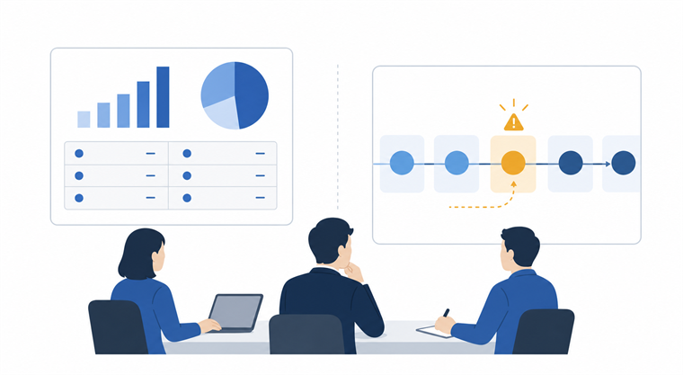
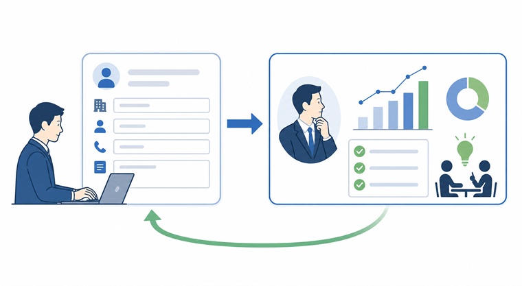

営業会議が数字報告で終わるとき、見えていないのは商談の詰まりです
みなさんこんにちは、Valorize AIの斎藤です。
営業会議は毎週きちんと開いている。売上見込みも、進捗も、担当者ごとのコメントも確認している。
それなのに、会議が終わったあとに「で、どの案件をどう進めるんだっけ」と感じることはないでしょうか。
数字は確認した。危なそうな案件も何となく分かった。けれど、商談が前に進んだ感覚はあまりない。次の一手が明確になった案件も限られている。
この違和感は、会議の進め方だけの問題ではないと思っています。
営業会議が案件支援の場になりにくいとき、会議中の聞き方よりも前に、会議前の時点で商談の詰まりが言語化されていないことが多いからです。
今回は、営業会議を「数字を確認する場」から「案件を前に進める場」へ変えるために、何を見える状態にしておくべきかを考えてみます。
営業会議が終わっても案件が進まない理由
営業会議で数字を確認すること自体は、とても大切です。
売上見込み、案件数、受注予定日、担当者ごとの進捗。これらが見えていなければ、営業組織として今どこにいるのかを把握できません。
ただ、数字を確認することと、案件を支援することは同じではありません。
たとえば、売上見込みが未達になりそうだと分かったとしても、それだけでは次に何をすべきかまでは見えません。ある案件が遅れていると分かっても、顧客側の検討が止まっているのか、担当者が次の確認を迷っているのか、競合比較で詰まっているのかによって、打ち手は変わります。
営業活動では、リード不足、商談数不足、営業人材不足、生産性、属人的営業などが課題として挙がることがあります。こうした状況では、会議時間を増やしてすべての案件を細かく聞くよりも、限られた時間で支援すべき案件を見つけることが重要になります。
ところが、会議前に案件の詰まりが整理されていないと、会議はどうしても報告中心になります。
「今月中に受注予定です」
「先方確認中です」
「次回提案予定です」
こうした報告は状況把握には役立ちます。ただ、それだけではマネージャーがどこに入るべきか、担当者に何を確認すべきか、案件のどこが危ないのかは見えにくいままです。
営業会議の問題は、会議時間や報告量の不足ではなく、会議で支援すべき案件の詰まりが見えていないことにあります。
数字は結果を示すが、詰まりの理由までは教えてくれない

数字は、営業マネジメントに欠かせないものです。
売上見込みが足りない。案件数が減っている。受注予定が後ろ倒しになっている。こうした変化を早く捉えることは、営業責任者にとって重要です。
一方で、数字はあくまで結果や状態を示すものです。
数字だけを見ても、なぜその状態になっているのか、どの案件に支援が必要なのか、次に何を確認すべきなのかまでは分かりません。
たとえば「提案中」の案件が複数あるとしても、中身はそれぞれ違います。
担当者が提案書を出して返答を待っている案件もあれば、顧客側で決裁者に上がっていない案件もあります。競合と比較されている案件もあれば、そもそも課題の優先順位が下がっている案件もあります。
同じ「提案中」でも、次に必要な確認はまったく違います。
「検討中」や「タイミング待ち」という表現も同じです。実際に待つべき案件もあります。しかし、次に何を確認するのかが決まっていないまま「検討中」と置かれている場合、その言葉は商談停滞を隠してしまいます。
営業会議で見るべきものは、数字の良し悪しだけではなく、その数字の裏でどの案件がどこで止まっているかです。
必要なのは、次に確認すべき論点が見えている案件情報
では、案件支援に使える情報とは何でしょうか。
私は、営業会議で本当に必要なのは、担当者の感想や状態名だけではなく、次に確認すべき論点が見えている案件情報だと考えています。
たとえば、案件情報を見るときに大事なのは、次のような観点です。
- 顧客側で何が止まっているのか
- 次に誰へ、何を確認する必要があるのか
- 担当者だけで進められるのか、上長や別メンバーの支援が必要なのか
- 放置すると失注や後ろ倒しにつながりそうな理由は何か
これは、細かい入力項目を増やすという話ではありません。
むしろ逆で、会議で支援に使わない情報をいくら増やしても、現場の負担は増えます。大事なのは、営業マネージャーが次の支援を判断できる粒度で、案件の詰まりが見えていることです。
「先方確認中です」という報告で止まるのか。
「先方の部長確認で止まっており、担当者は稟議に必要な費用対効果の説明材料を求めています」と見えるのか。
この違いで、会議の中身は大きく変わります。
後者であれば、マネージャーは「では、次回は費用対効果の説明を一緒に整理しよう」「決裁者向けの資料に変えよう」と具体的に支援できます。前者のままだと、「確認お願いします」で終わってしまいやすい。
案件情報は、会議で報告するための記録ではなく、営業マネージャーが次の支援を判断するための材料として整える必要があります。
情報入力が続かない背景には、判断に返ってこない構造がある

ここでよく出てくるのが、SFAやCRM、案件表への入力が続かないという問題です。
営業メンバーが情報を入れない。更新が遅れる。必要な情報が共有されない。こうした悩みは、多くの営業組織で起こりやすいものです。
ただ、これを単純に「現場の入力意識が低い」と見ると、問題を見誤ります。
SFAやCRMを利用する企業を対象にした調査でも、入力・更新の煩雑さ、情報入力されないこと、必要情報が適切に共有されないことは課題として挙がっています。また、ツールを導入していても、入力負担やデータ精度、ダッシュボード活用不足といった運用面の課題は残ります。
つまり、ツールがあるだけでは、案件情報は自然に営業判断へ変わりません。
現場から見ると、入力した情報が会議で数字確認にしか使われない場合、その入力は「管理のための作業」に見えます。自分の次の行動に返ってこない。マネージャーからの支援にもつながらない。そうなると、忙しい中で入力の優先度が下がるのは自然です。
逆に、入力した情報が会議で具体的な支援につながるなら、意味が変わります。
案件の詰まりを書いたら、マネージャーが一緒に打ち手を考えてくれる。顧客側で止まっている理由を共有したら、次に確認すべき論点が整理される。こうした流れがあると、案件情報は管理負担ではなく、営業を進めるための材料になります。
入力を徹底させるだけでは不十分で、入力された情報が会議での判断や支援に使われる流れを作ることが重要です。
少人数営業ほど、全案件を見るより詰まりを早く見つける
特に中小企業の営業組織では、営業マネージャーがすべての案件を同じ粒度で見続けることは難しいと思います。
プレイングマネージャーとして自分の商談も持っている。採用や育成にも時間を使う。既存顧客対応もある。こうした中で、全案件を毎回細かく確認するのは現実的ではありません。
だからこそ、営業会議では「全部を均等に見る」よりも、「今、支援すべき案件を早く見つける」ことが大切になります。
売上見込みが大きい案件。受注予定が近いのに次アクションが曖昧な案件。担当者だけでは顧客側の論点を整理しきれていない案件。長く同じステージに残っている案件。
こうした案件が事前に見えていれば、会議の時間はかなり変わります。
全員が順番に進捗を読み上げる時間ではなく、詰まりのある案件に対して、次に何を確認するかを決める時間になります。担当者を責める場ではなく、案件を前に進めるために支援を集める場になります。
営業会議の価値は、全案件を均等に確認することではなく、今支援すべき案件を見つけて次の一手を明確にすることにあります。
営業会議は、会議前の準備で支援の質が決まる
営業会議を変えようとすると、つい会議中の進行に目が向きます。
アジェンダを整える。発言時間を決める。報告フォーマットを作る。もちろん、それらも必要な場面はあります。
ただ、案件支援の質を左右するのは、会議中の進行だけではありません。
会議前の時点で、どの案件が、なぜ止まり、次に何を確認すべきかが見えているか。ここが整っていなければ、会議中にいくら質問しても、担当者の記憶やその場の説明に頼ることになります。
営業会議を案件支援の場に変える第一歩は、会議の前に商談の詰まりを言語化することです。
数字をなくす必要はありません。数字は大事です。ただ、その数字を見たあとに、どの案件に支援が必要なのか、何を確認すれば前に進むのかが見える状態にしておく。
ここまでできると、営業会議は単なる進捗確認ではなく、案件を前に進めるための判断の場になります。
もし、自社の営業活動でも同じような課題を感じている場合は、まず現状を整理するところからお手伝いできますので、お気軽にご連絡ください！